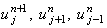
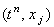
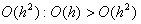
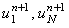

|
2.2. Порядок аппроксимации. Метод решения.
Для определения порядка аппроксимации явной разностной схемы (6.2) подставим в неё
выражения (2.16)-(2.18), описывающие разложение значений 
в ряд Тейлора относительно точки  на разностной сетке:
Так как ошибка O(h) является более грубой, чем , явная разностная схема (6.2) аппроксимирует исходное
дифференциальное уравнение (6.1) с первым порядком и по времени, и по координате:
Разностный шаблон
(см. рисунок), характеризующий явную разностную схему (6.2), свидетельствует о том, что она содержит
одну неизвестную величину - значение функции u на (n + 1)-ом шаге по времени.
Выражая эту величину из разностной схемы, получаем рекуррентное соотношение
позволяющее рассчитать все значения функции u на (n + 1)-ом шаге по времени
(при известных значениях функции u на n-ом шаге), кроме значений ,
определяемых с помощью граничных условий. Если заданы граничные условия 1-го рода,
то значения определяются непосредственно из их разностной аппроксимации; если 2-го или 3-го рода,
то - с помощью соотношений (4.4a) и (4.4b). Таким образом, алгоритм решения явной разностной схемы (6.2)
аналогичен алгоритму решения явной разностной схемы (4.2), аппроксимирующей дифференциальное
уравнение параболического типа, не содержащее производную по координате первого порядка.
|